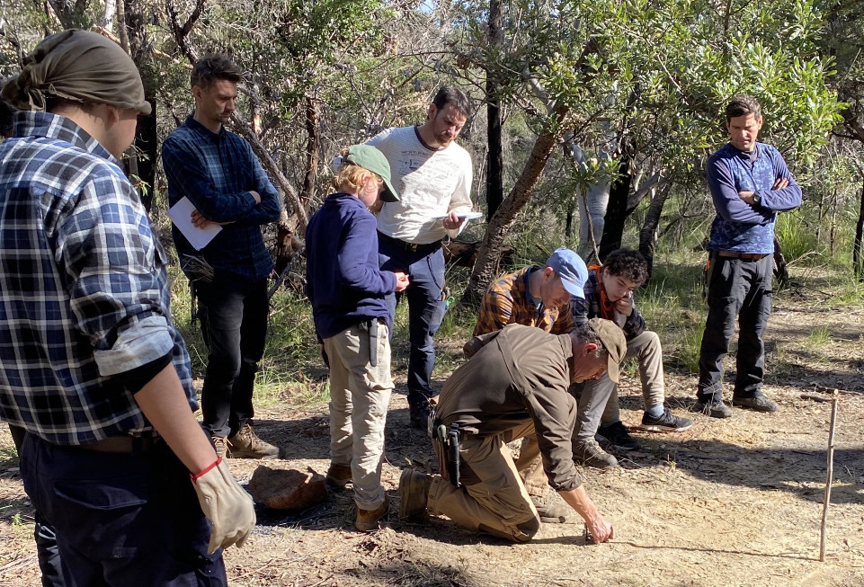

About
I work in the Trustworthy Systems Research Group of CSIRO, Australia's national science research agency. I use techniques from mathematical logic to help create trustworthy software and hardware that comes with strong security, safety and reliability guarantees.
I obtained my PhD in Mathematics at the University of Manchester in October 2019, under the supervision of Prof. Alexandre Borovik. My PhD thesis explored algebraic applications of Internal Set Theory, an axiomatic set theory developed by Edward Nelson as a foundation for Nonstandard Analysis. Highlights from my thesis include a powerful extension theorem for actions of LEF groups on compact manifolds, along with a "Robinsonian" characterization theorem for sheaves on topological spaces. Introducing a non-standard extension of Martin-Löf Type Theory allowed me to formally verify the main results of my thesis using the Agda interactive theorem prover. I also made some contributions to the theory of degrees of satisfiability in probabilistic group theory, and to the theory and practice of stochastic optimization in computer science. I have 16 refereed publications in international journals and conferences (listed in my CV). Click the buttons below to find out more about my research interests!
CV / Résumé
Mathematical Curiosities

Pseudo-Randomness and Homology
Which one of these three point clouds can we get by sampling the unit cube using a pseudo-random sequence? Surprisingly, the answer is any one of them, depending on the sequence we use. We used three sequences to sample the same manifold: the unit cube, which has one connected component and no holes. However, the first two sequences fail to yield a uniform sample. In the first case (RANDU), the resulting point cloud seemingly consists of 15 separate connected components. In the second case (XorShift64, scaled), there is only one component, but it has many holes. Using persistent homology, one can rigorously define the Betti numbers of point samples, and investigate their relationship to the Betti numbers of the sampled manifold. In my honors thesis I classified some pseudorandom sequences based on their ability to reflect the topological properties of the manifolds they sample, and developed an algorithm that can test for failures of uniformity by calculating persistent homology groups of the samples..
Degree of Satisfiability
Which non-Abelian group is closest to being Abelian? Which composite number is farthest from being prime? Such questions can be formulated and answered using the theory of Degree of Satisfiability (and result in striking visual arrangements that feature heavily on this web page). The degree of satisfiability of a logical formula φ(x,y) is the probability that φ(a,b) holds for uniformly randomly chosen a,b. A famous theorem of Gustafson states that the degree of satisfiability of the equality xy=yx is at most 5/8 in a non-Abelian group, with equality obtained in the Quaternion Group. Hence, one can say that the Quaternion Group is closest to being Abelian among all the non-Abelian groups. The degree of satisfiability of equations in infinite groups gives significant information about algebraic structure, e.g. about virtual properties. I proved results about the degree of satisfiability of some special equations, and introduced criteria to identify which equations hold in a finite index subgroup precisely if they have positive degree of satisfiability.
PhD Thesis
My PhD thesis (available here) explores two novel algebraic applications of Internal Set Theory. I prove that every profinite group admits a finite approximation in the sense of Zilber, and my main result shows that well-behaved actions of the approximating group on a compact manifold give rise to similarly well-behaved actions of periodic subgroups of the approximated group on the same manifold. This generalizes earlier results of Manevitz and Weinberger on circle actions to a large class of groups. Motivated by the extraction of computational bounds from proofs in a pure fragment of IST, I devised a pure presentation of sheaves over topological spaces in the style of Robinson and proved it equivalent to the usual definition over standard objects. By introducing a non-standard extension of Martin-Löf Type Theory I formally verified my results using the Agda proof assistant.
News and Media
Upcoming: 26 Apr 2021
I'll be presenting new results on degree of satisfiability at the CSIRO Trustworthy Systems seminar.
31 Mar 2021
Ben Bumpus presented our joint work on Spined Categories at the 37th British Colloquium for Theoretical Computer Science.
Hobbies

Having grown up in the semi-rural outskirts of a Central/Eastern European metropolis, I'm equally comfortable with big city and wilderness adventures. On my day off, you're just as likely to find me among the wide streets and dense urban skyscrapers of the Sydney CBD as in the coastal bushlands of New South Wales. In the city, Central Park and Bucket Boys Darling Square are among my favorite hangouts. In the bush, I'm partial to the trails of Ku-ring-gai Chase National Park.
I love public speaking and being on stage: I was a member of Manchester Orators, a chartered club for public speaking, presentation and leadership, between 2017 and 2019. I also have an interest in remote area first aid, rescue and recovery: I hold the basic Bushcraft Survival Australia certificate, and I am training to qualify for the State Emergency Service's BSAR team.
Contact
If you have any question, or if you wish to hire me as a consultant, use the email address below. You can also find me on the Mathematics Stack Exchange and on Semantic Scholar.